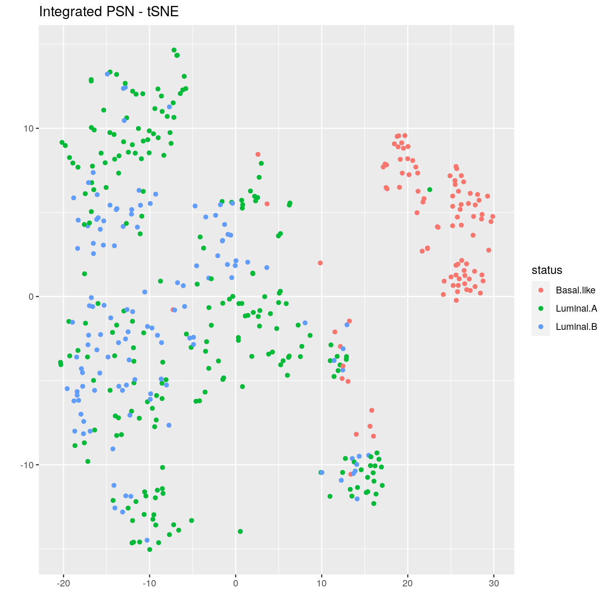

Lab 1: Build 3-way patient classifier from 4 data layers
Intro
In this lab we will build a predictor to classify three different types of breast tumours, two of a luminal subtype (Luminal A and Luminal B), and one of a basal subtype.
For this we will use data from the The Cancer Genome Atlas, and will integrate four types of -omic data:
- gene expression (measured on XXX arrays)
- DNA methylation (XXX arrays)
- proteomic measures from XXX, and
- miRNA sequencing
Prepare data
In this example, we use curated data from The Cancer Genome Atlas, through the BioConductor curatedTCGAData package. Data for all cancer types profiled in TCGA are available through this package; see tutorial for more info.
suppressMessages(library(curatedTCGAData))Take a look at the available data without downloading any (set dry.run=TRUE):
curatedTCGAData(diseaseCode="BRCA", assays="*",dry.run=TRUE)## snapshotDate(): 2020-10-27## See '?curatedTCGAData' for 'diseaseCode' and 'assays' inputs## ah_id title file_size rdataclass
## 1 EH584 BRCA_CNASeq-20160128 0 Mb RaggedExperiment
## 2 EH585 BRCA_CNASNP-20160128 9.8 Mb RaggedExperiment
## 3 EH586 BRCA_CNVSNP-20160128 2.8 Mb RaggedExperiment
## 4 EH588 BRCA_GISTIC_AllByGene-20160128 1.3 Mb SummarizedExperiment
## 5 EH2121 BRCA_GISTIC_Peaks-20160128 0 Mb RangedSummarizedExperiment
## 6 EH589 BRCA_GISTIC_ThresholdedByGene-20160128 0.4 Mb SummarizedExperiment
## 7 EH2122 BRCA_Methylation_methyl27-20160128_assays 63.2 Mb SummarizedExperiment
## 8 EH2123 BRCA_Methylation_methyl27-20160128_se 0.4 Mb SummarizedExperiment
## 9 EH2124 BRCA_Methylation_methyl450-20160128_assays 2613.2 Mb RaggedExperiment
## 10 EH2125 BRCA_Methylation_methyl450-20160128_se 6.1 Mb SummarizedExperiment
## 11 EH593 BRCA_miRNASeqGene-20160128 0.6 Mb SummarizedExperiment
## 12 EH594 BRCA_mRNAArray-20160128 27.3 Mb SummarizedExperiment
## 13 EH595 BRCA_Mutation-20160128 4.5 Mb RaggedExperiment
## 14 EH596 BRCA_RNASeq2GeneNorm-20160128 64.5 Mb SummarizedExperiment
## 15 EH597 BRCA_RNASeqGene-20160128 30 Mb SummarizedExperiment
## 16 EH598 BRCA_RPPAArray-20160128 1.6 Mb SummarizedExperiment
## rdatadateadded rdatadateremoved
## 1 2017-10-10 <NA>
## 2 2017-10-10 <NA>
## 3 2017-10-10 <NA>
## 4 2017-10-10 <NA>
## 5 2019-01-09 <NA>
## 6 2017-10-10 <NA>
## 7 2019-01-09 <NA>
## 8 2019-01-09 <NA>
## 9 2019-01-09 <NA>
## 10 2019-01-09 <NA>
## 11 2017-10-10 <NA>
## 12 2017-10-10 <NA>
## 13 2017-10-10 <NA>
## 14 2017-10-10 <NA>
## 15 2017-10-10 <NA>
## 16 2017-10-10 <NA>Now let’s actually sdownload the data:
brca <- suppressMessages(curatedTCGAData("BRCA",
c("mRNAArray","Methylation_methyl27",
"RPPAArray","miRNASeqGene"),
dry.run=FALSE))This call returns a MultiAssayExperiment object. Recall that this is a container for storing multiple assays performed on the same set of samples. See this tutorial to learn more.
Let’s briefly explore the brca MultiAssayExperiment object.
brca## A MultiAssayExperiment object of 4 listed
## experiments with user-defined names and respective classes.
## Containing an ExperimentList class object of length 4:
## [1] BRCA_miRNASeqGene-20160128: SummarizedExperiment with 1046 rows and 849 columns
## [2] BRCA_mRNAArray-20160128: SummarizedExperiment with 17814 rows and 590 columns
## [3] BRCA_RPPAArray-20160128: SummarizedExperiment with 226 rows and 937 columns
## [4] BRCA_Methylation_methyl27-20160128: SummarizedExperiment with 27578 rows and 343 columns
## Functionality:
## experiments() - obtain the ExperimentList instance
## colData() - the primary/phenotype DataFrame
## sampleMap() - the sample coordination DataFrame
## `$`, `[`, `[[` - extract colData columns, subset, or experiment
## *Format() - convert into a long or wide DataFrame
## assays() - convert ExperimentList to a SimpleList of matrices
## exportClass() - save all data to filesassays() returns a list with all -omic data associated with this object.
summary(assays(brca))## [1] "List object of length 4 with 0 metadata columns"names() shows you what -omic datatypes the layers correspond to:
names(assays(brca))## [1] "BRCA_miRNASeqGene-20160128" "BRCA_mRNAArray-20160128"
## [3] "BRCA_RPPAArray-20160128" "BRCA_Methylation_methyl27-20160128"And here we subset the miRNA data, looking at data for the first five patients
mir <- assays(brca)[["BRCA_miRNASeqGene-20160128"]]
head(mir[,1:5])## TCGA-3C-AAAU-01A-11R-A41G-13 TCGA-3C-AALI-01A-11R-A41G-13
## hsa-let-7a-1 95618 49201
## hsa-let-7a-2 189674 98691
## hsa-let-7a-3 96815 49035
## hsa-let-7b 264034 148591
## hsa-let-7c 3641 5095
## hsa-let-7d 4333 3263
## TCGA-3C-AALJ-01A-31R-A41G-13 TCGA-3C-AALK-01A-11R-A41G-13
## hsa-let-7a-1 75342 57278
## hsa-let-7a-2 150472 114320
## hsa-let-7a-3 76206 57540
## hsa-let-7b 99938 164553
## hsa-let-7c 5799 18464
## hsa-let-7d 5658 2114
## TCGA-4H-AAAK-01A-12R-A41G-13
## hsa-let-7a-1 67196
## hsa-let-7a-2 134563
## hsa-let-7a-3 67607
## hsa-let-7b 136918
## hsa-let-7c 20429
## hsa-let-7d 2162Look at sample phenotype data, where rows contain data for each patient and columns have non-omic measures (e.g. clinical data):
pheno <- colData(brca)
colnames(pheno)[1:20]## [1] "patientID" "years_to_birth"
## [3] "vital_status" "days_to_death"
## [5] "days_to_last_followup" "tumor_tissue_site"
## [7] "pathologic_stage" "pathology_T_stage"
## [9] "pathology_N_stage" "pathology_M_stage"
## [11] "gender" "date_of_initial_pathologic_diagnosis"
## [13] "days_to_last_known_alive" "radiation_therapy"
## [15] "histological_type" "number_of_lymph_nodes"
## [17] "race" "ethnicity"
## [19] "admin.bcr" "admin.day_of_dcc_upload"head(pheno[,1:5])## DataFrame with 6 rows and 5 columns
## patientID years_to_birth vital_status days_to_death days_to_last_followup
## <character> <integer> <integer> <integer> <integer>
## TCGA-A1-A0SB TCGA-A1-A0SB 70 0 NA 259
## TCGA-A1-A0SD TCGA-A1-A0SD 59 0 NA 437
## TCGA-A1-A0SE TCGA-A1-A0SE 56 0 NA 1321
## TCGA-A1-A0SF TCGA-A1-A0SF 54 0 NA 1463
## TCGA-A1-A0SG TCGA-A1-A0SG 61 0 NA 434
## TCGA-A1-A0SH TCGA-A1-A0SH 39 0 NA 1437This next code block prepares the TCGA data. This includes:
- removing duplicate samples
- reformatting patient IDs (e.g. removing spaces and hyphens)
- creating an
IDcolumn incolData(brca), which contains unique patient IDs - creating a
STATUScolumn incolData(brca)which contains the patient labels (i.e what we want netDx to classify).
In practice you would do this once and save the data before running netDx. This code has been moved into a supporting file, prepare_data.R. You can explore it after the lab to see how some things are achieved (e.g. removing duplicate samples).
source("prepare_data.R")
brca <- prepareDataForCBW(brca)## harmonizing input:
## removing 42 sampleMap rows with 'colname' not in colnames of experiments## harmonizing input:
## removing 59 sampleMap rows with 'colname' not in colnames of experiments## harmonizing input:
## removing 19 sampleMap rows with 'colname' not in colnames of experiments## harmonizing input:
## removing 26 sampleMap rows with 'colname' not in colnames of experimentsNotice that we now have ID and STATUS columns in the sample metadata table.
Note: These columns are required by netDx.
pheno <- colData(brca)
head(pheno[,c("ID","STATUS")])## DataFrame with 6 rows and 2 columns
## ID STATUS
## <character> <character>
## TCGA-A1-A0SD TCGA-A1-A0SD Luminal.A
## TCGA-A1-A0SE TCGA-A1-A0SE Luminal.A
## TCGA-A1-A0SH TCGA-A1-A0SH Luminal.A
## TCGA-A1-A0SJ TCGA-A1-A0SJ Luminal.A
## TCGA-A1-A0SK TCGA-A1-A0SK Basal.like
## TCGA-A1-A0SM TCGA-A1-A0SM Luminal.Btable(pheno$STATUS,useNA="always") # useNA lets you see ##
## Basal.like Luminal.A Luminal.B <NA>
## 97 230 127 0 # unintentional missing valuesMake rules to convert data into features
Now let’s set up the data for input to netDx. netDx allows the user to define how data is converted into patient similarity networks (or PSNs), which are the features that go into the model. This is done specifically by telling the model how to group different types of data and how to define similarity for each of these (e.g. Pearson correlation, normalized difference, etc.,).
The relevant input parameters are:
dataList: the patient data, provided as aMultiAssayExperimentobject. Refer to the tutorials for MultiAssayExperiment to see how to construct those objects from data.groupList: sets of input data that would correspond to individual networks (e.g. genes grouped into pathways)
Let’s start by loading the netDx package.
suppressWarnings(suppressMessages(require(netDx)))Let’s set up each of the input arguments one by one.
dataList
What is this: The input data.
Format: MultiAssayExperiment object.
We’ve already set this up; this is the brca object, so nothing more to do here.
groupList
What is this: groupList tells netDx how to group measures within a layer, to generate a PSN. Measures could be individual genes, proteins, CpG bases (in DNA methylation data), clinical variables, etc.,
In this simple example we just create one PSN per datatype:
expr <- assays(brca)
groupList <- list()
for (k in 1:length(expr)) {
cur <- expr[[k]]; nm <- names(expr)[k]
# all measure names should be in rownames column
groupList[[nm]] <- list(nm=rownames(cur))
names(groupList[[nm]])[1] <- nm;
}groupList is a two tiered list, or list-of-lists. The first tier is for each data layers, with names matching those in assays(brca). The second tier contains all the PSNs we want to make for that layer.
**SP:
Here is the first layer:
summary(groupList)## Length Class Mode
## BRCA_miRNASeqGene-20160128 1 -none- list
## BRCA_mRNAArray-20160128 1 -none- list
## BRCA_RPPAArray-20160128 1 -none- list
## BRCA_Methylation_methyl27-20160128 1 -none- listIn this lab exercise we create only one PSN per data layer, using all the measures from an -omic assay. e.g. One PSN based on similarity across entire transcriptome, one for methylome, etc.,). So in this lab exercise, the inner tier simply contains one entry, with all measures for the given layer. This design will get more interested in Lab 2, when we create pathway-level features.
names(groupList[["BRCA_mRNAArray-20160128"]])## [1] "BRCA_mRNAArray-20160128"head(groupList[["BRCA_mRNAArray-20160128"]][[1]])## [1] "ELMO2" "CREB3L1" "RPS11" "PNMA1" "MMP2" "C10orf90"Define patient similarity for each network
This function is defined by the user and tells the predictor how to create networks from the provided input data.
This function requires dataList,groupList, and netDir as input variables. The residual ... parameter is to pass additional variables to makePSN_NamedMatrix(), notably numCores (number of parallel jobs).
netDx requires that this function have:
dataList,groupList, andnetDiras input variables. The residual...parameter is to pass additional variables tomakePSN_NamedMatrix(), notably number of cores for parallel processing (numCores).
makeNets <- function(dataList, groupList, netDir,...) {
netList <- c() # initialize before is.null() check
layerNames <- c("BRCA_miRNASeqGene-20160128",
"BRCA_mRNAArray-20160128",
"BRCA_RPPAArray-20160128",
"BRCA_Methylation_methyl27-20160128")
for (nm in layerNames){ ## for each layer
if (!is.null(groupList[[nm]])){ ## must check for null for each layer
netList_cur <- makePSN_NamedMatrix(
dataList[[nm]],
rownames(dataList[[nm]]), ## names of measures (e.g. genes, CpGs)
groupList[[nm]], ## how to group measures in that layer
netDir, ## leave this as-is, netDx will figure out where this is.
verbose=TRUE,
writeProfiles=TRUE, ## use Pearson correlation-based similarity
...
)
netList <- c(netList,netList_cur) ## just leave this in
}
}
return(unlist(netList)) ## just leave this in
}Note: While netDx provides a high degree of flexibility in achieving your design of choice, it is up to the user to ensure that the design, i.e. the similarity metric and variable groupings, is appropriate for your application. Domain knowledge is almost likely required for good design.
Build predictor
Finally we call the function that runs the netDx predictor. We provide:
- patient data (
dataList) - grouping rules (
groupList) - function to create PSN from data, includes choice of similarity metric (
makeNetFunc) - number of train/test splits over which to collect feature scores and average performance:
numSplits, - maximum score for features in one round of feature selection (
featScoreMax, set to 10) - threshold to call feature-selected networks for each train/test split (
featSelCutoff); only features scoring this value or higher will be used to classify test patients, - number of cores to use for parallel processing (
numCores).
The call below runs 2 train/test splits, to be able to run fast. Within each split, it:
- splits data into train/test using the default split of 80:20
- score2 networks between 0 to 2 (i.e.
featScoreMax=2) - uses networks that score >=1 out of 2 (
featSelCutoff) to classify test samples for that split.
These are unrealistically low values set so the example will run fast. In practice a good starting point is featScoreMax=10, featSelCutoff=9 and numSplits=100, but these parameters depend on the sample sizes in the dataset and heterogeneity of the samples.
set.seed(42) # make results reproducible
outDir <- paste(tempdir(),randAlphanumString(),
"pred_output",sep=getFileSep())
###if (file.exists(outDir)) unlink(outDir,recursive=TRUE)
###
###model <- buildPredictor(
### dataList=brca, ## your data
### groupList=groupList, ## grouping strategy
### makeNetFunc=makeNets, ## function to build PSNs
### outDir=outDir, ## output directory
### trainProp=0.8, ## pct of samples to use to train model in
## each split
### numSplits=2L, ## number of train/test splits
### featSelCutoff=1L, ## threshold for calling something
## feature-selected
### featScoreMax=2L, ## max score for feature selection
### numCores=4L, ## set higher for parallelizing
### debugMode=FALSE,
### keepAllData=FALSE, ## set to TRUE for debugging or low-level files used by the predictor
### logging="none"
### )
load("/home/spai/data/CBW2021/model_twosplits.rda")Examine output
The results are stored in the list object returned by the buildPredictor() call.
This list contains:
inputNets: all input networks that the model started with.Split<i>: a list with results for each train-test splitpredictions: real and predicted labels for test patientsaccuracy: percent accuracy of predictionsfeatureScores: feature scores for each label (list withgentries, wheregis number of patient labels). Each entry contains the feature selection scores for the corresponding label.featureSelected: vector of features that pass feature selection. List of lengthg, with one entry per label.
summary(model)## Length Class Mode
## inputNets 8 -none- character
## Split1 4 -none- list
## Split2 4 -none- listsummary(model$Split1)## Length Class Mode
## featureScores 3 -none- list
## featureSelected 3 -none- list
## predictions 2692 data.frame list
## accuracy 1 -none- numericGet model results
Now we get model output, including performance for various train/test splits and consistently high-scoring features. helper.R contains convenience functions to do this, which will be integrated into upcoming versions of netDx.
In the function below, we define top-scoring features as those which score at least 2 in at least half of the train/test splits
source("helper.R")
results <- getResults(brca,model,featureSelCutoff=2L,
featureSelPct=0.5)## Detected 2 splits and 3 classes## * Compiling feature scores and calling selected featuresresults contains performance, selectedFeatures for each patient label, and the table of feature scores.
summary(results)## Length Class Mode
## selectedFeatures 2 -none- list
## featureScores 3 -none- list
## performance 2 -none- listLook at the performance:
results$performance## $meanAccuracy
## [1] 0.7282609
##
## $splitAccuracy
## [1] 0.7391304 0.7173913Look at feature scores for all labels, across all train-test splits:
results$featureScores## $Luminal.A
## Feature Split1 Split2
## 1 BRCA_Methylation_methyl27-20160128 1 1
## 2 BRCA_RPPAArray-20160128 2 2
## 3 BRCA_mRNAArray-20160128 2 2
## 4 BRCA_miRNASeqGene-20160128 1 1
##
## $Basal.like
## Feature Split1 Split2
## 1 BRCA_Methylation_methyl27-20160128 2 2
## 2 BRCA_RPPAArray-20160128 2 2
## 3 BRCA_mRNAArray-20160128 2 2
## 4 BRCA_miRNASeqGene-20160128 1 2
##
## $Luminal.B
## Feature Split1 Split2
## 1 BRCA_Methylation_methyl27-20160128 2 2
## 2 BRCA_RPPAArray-20160128 2 2
## 3 BRCA_mRNAArray-20160128 2 2And here are selected features, which are those scoring 2 out of 2 in at least half of the splits. This threshold is simply for illustration. In practice we would run at least 10 train/test splits (ideally 100+), and look for features that score 7+ out of 10 in >70% splits.
results$selectedFeatures## $featScores
## $featScores$Luminal.A
## Feature Split1 Split2
## 1 BRCA_Methylation_methyl27-20160128 1 1
## 2 BRCA_RPPAArray-20160128 2 2
## 3 BRCA_mRNAArray-20160128 2 2
## 4 BRCA_miRNASeqGene-20160128 1 1
##
## $featScores$Basal.like
## Feature Split1 Split2
## 1 BRCA_Methylation_methyl27-20160128 2 2
## 2 BRCA_RPPAArray-20160128 2 2
## 3 BRCA_mRNAArray-20160128 2 2
## 4 BRCA_miRNASeqGene-20160128 1 2
##
## $featScores$Luminal.B
## Feature Split1 Split2
## 1 BRCA_Methylation_methyl27-20160128 2 2
## 2 BRCA_RPPAArray-20160128 2 2
## 3 BRCA_mRNAArray-20160128 2 2
##
##
## $selectedFeatures
## $selectedFeatures$Luminal.A
## [1] "BRCA_Methylation_methyl27-20160128" "BRCA_RPPAArray-20160128"
## [3] "BRCA_mRNAArray-20160128" "BRCA_miRNASeqGene-20160128"
##
## $selectedFeatures$Basal.like
## [1] "BRCA_Methylation_methyl27-20160128" "BRCA_RPPAArray-20160128"
## [3] "BRCA_mRNAArray-20160128" "BRCA_miRNASeqGene-20160128"
##
## $selectedFeatures$Luminal.B
## [1] "BRCA_Methylation_methyl27-20160128" "BRCA_RPPAArray-20160128"
## [3] "BRCA_mRNAArray-20160128"We finally get the integrated PSN and visualize it using a tSNE plot:
psn <- getPSN(brca,groupList,makeNets,results$selectedFeatures)## BRCA_miRNASeqGene-20160128: 1 features## BRCA_mRNAArray-20160128: 1 features## BRCA_RPPAArray-20160128: 1 features## BRCA_Methylation_methyl27-20160128: 1 features## * Making integrated PSN## Warning in dir.create(paste(netDir, "profiles", sep = fsep)): '/tmp/RtmpH3a8cI/profiles'
## already exists## Warning in dir.create(paste(netDir, "INTERACTIONS", sep = fsep)): '/tmp/RtmpH3a8cI/
## INTERACTIONS' already existstsne <- tSNEPlotter(
psn$patientSimNetwork_unpruned,
colData(brca)
)## * Making symmetric matrix## * Running tSNE## * Plotting
Conclusion
Congratulations! You have successfully classified three types of tumours by integrating four different -omic layers (transcriptomic, methylomic,proteomic and miRNA).
But these features aren’t really interpretable. Let’s change that with our next tutorial.
Best practices side note: We end this tutorial with a call to sessionInfo() which prints the complete environment information for your R session. This is standard output that should be reported to R package managers when you write in with a question, particularly if reporting an error or bug. Sometimes a particular underlying dependency package may be the cause of an error, or you may need to upgrade to a newer version of the package. By including this info in an email, you will allow the other person to better solve your issue.
sessionInfo
sessionInfo()## R version 4.0.5 (2021-03-31)
## Platform: x86_64-pc-linux-gnu (64-bit)
## Running under: Ubuntu 20.04.2 LTS
##
## Matrix products: default
## BLAS/LAPACK: /usr/lib/x86_64-linux-gnu/openblas-pthread/libopenblasp-r0.3.8.so
##
## locale:
## [1] LC_CTYPE=C LC_NUMERIC=C LC_TIME=C
## [4] LC_COLLATE=C LC_MONETARY=C LC_MESSAGES=C
## [7] LC_PAPER=en_US.UTF-8 LC_NAME=C LC_ADDRESS=C
## [10] LC_TELEPHONE=C LC_MEASUREMENT=en_US.UTF-8 LC_IDENTIFICATION=C
##
## attached base packages:
## [1] stats4 parallel stats graphics grDevices utils datasets methods
## [9] base
##
## other attached packages:
## [1] plotrix_3.8-1 ggplot2_3.3.3 Rtsne_0.15
## [4] rhdf5_2.34.0 curatedTCGAData_1.12.1 MultiAssayExperiment_1.16.0
## [7] SummarizedExperiment_1.20.0 GenomicRanges_1.42.0 GenomeInfoDb_1.26.7
## [10] IRanges_2.24.1 S4Vectors_0.28.1 MatrixGenerics_1.2.1
## [13] matrixStats_0.58.0 netDx_1.2.3 bigmemory_4.5.36
## [16] Biobase_2.50.0 BiocGenerics_0.36.1
##
## loaded via a namespace (and not attached):
## [1] utf8_1.2.1 R.utils_2.10.1
## [3] tidyselect_1.1.1 RSQLite_2.2.7
## [5] AnnotationDbi_1.52.0 grid_4.0.5
## [7] combinat_0.0-8 BiocParallel_1.24.1
## [9] RNeXML_2.4.5 munsell_0.5.0
## [11] codetools_0.2-18 withr_2.4.2
## [13] colorspace_2.0-1 highr_0.9
## [15] knitr_1.33 uuid_0.1-4
## [17] zinbwave_1.12.0 rstudioapi_0.13
## [19] SingleCellExperiment_1.12.0 ROCR_1.0-11
## [21] NMF_0.23.0 labeling_0.4.2
## [23] GenomeInfoDbData_1.2.4 bit64_4.0.5
## [25] farver_2.1.0 vctrs_0.3.8
## [27] generics_0.1.0 xfun_0.23
## [29] BiocFileCache_1.14.0 R6_2.5.0
## [31] doParallel_1.0.16 ggbeeswarm_0.6.0
## [33] netSmooth_1.10.0 rsvd_1.0.5
## [35] RJSONIO_1.3-1.4 locfit_1.5-9.4
## [37] bitops_1.0-7 rhdf5filters_1.2.1
## [39] cachem_1.0.5 DelayedArray_0.16.3
## [41] assertthat_0.2.1 promises_1.2.0.1
## [43] scales_1.1.1 beeswarm_0.3.1
## [45] gtable_0.3.0 phylobase_0.8.10
## [47] beachmat_2.6.4 rlang_0.4.11
## [49] genefilter_1.72.1 splines_4.0.5
## [51] lazyeval_0.2.2 BiocManager_1.30.15
## [53] yaml_2.2.1 reshape2_1.4.4
## [55] httpuv_1.6.1 tools_4.0.5
## [57] bookdown_0.22 gridBase_0.4-7
## [59] ellipsis_0.3.2 jquerylib_0.1.4
## [61] RColorBrewer_1.1-2 Rcpp_1.0.6
## [63] plyr_1.8.6 sparseMatrixStats_1.2.1
## [65] progress_1.2.2 zlibbioc_1.36.0
## [67] purrr_0.3.4 RCurl_1.98-1.3
## [69] prettyunits_1.1.1 viridis_0.6.1
## [71] cluster_2.1.1 tinytex_0.31
## [73] magrittr_2.0.1 data.table_1.14.0
## [75] RSpectra_0.16-0 hms_1.1.0
## [77] mime_0.10 evaluate_0.14
## [79] xtable_1.8-4 XML_3.99-0.6
## [81] gridExtra_2.3 shape_1.4.6
## [83] compiler_4.0.5 scater_1.18.6
## [85] tibble_3.1.2 RCy3_2.10.2
## [87] crayon_1.4.1 R.oo_1.24.0
## [89] htmltools_0.5.1.1 entropy_1.3.0
## [91] later_1.2.0 tidyr_1.1.3
## [93] howmany_0.3-1 DBI_1.1.1
## [95] ExperimentHub_1.16.1 dbplyr_2.1.1
## [97] MASS_7.3-53.1 rappdirs_0.3.3
## [99] Matrix_1.3-2 ade4_1.7-16
## [101] R.methodsS3_1.8.1 igraph_1.2.6
## [103] pkgconfig_2.0.3 bigmemory.sri_0.1.3
## [105] rncl_0.8.4 registry_0.5-1
## [107] locfdr_1.1-8 scuttle_1.0.4
## [109] xml2_1.3.2 foreach_1.5.1
## [111] annotate_1.68.0 vipor_0.4.5
## [113] bslib_0.2.5.1 rngtools_1.5
## [115] pkgmaker_0.32.2 XVector_0.30.0
## [117] stringr_1.4.0 digest_0.6.27
## [119] pracma_2.3.3 graph_1.68.0
## [121] softImpute_1.4-1 rmarkdown_2.8
## [123] edgeR_3.32.1 DelayedMatrixStats_1.12.3
## [125] curl_4.3.1 kernlab_0.9-29
## [127] shiny_1.6.0 lifecycle_1.0.0
## [129] nlme_3.1-152 jsonlite_1.7.2
## [131] clusterExperiment_2.10.1 Rhdf5lib_1.12.1
## [133] BiocNeighbors_1.8.2 viridisLite_0.4.0
## [135] limma_3.46.0 fansi_0.4.2
## [137] pillar_1.6.1 lattice_0.20-41
## [139] fastmap_1.1.0 httr_1.4.2
## [141] survival_3.2-10 interactiveDisplayBase_1.28.0
## [143] glue_1.4.2 iterators_1.0.13
## [145] BiocVersion_3.12.0 glmnet_4.1-1
## [147] bit_4.0.4 stringi_1.6.2
## [149] sass_0.4.0 HDF5Array_1.18.1
## [151] blob_1.2.1 BiocSingular_1.6.0
## [153] AnnotationHub_2.22.1 memoise_2.0.0
## [155] dplyr_1.0.6 irlba_2.3.3
## [157] ape_5.5